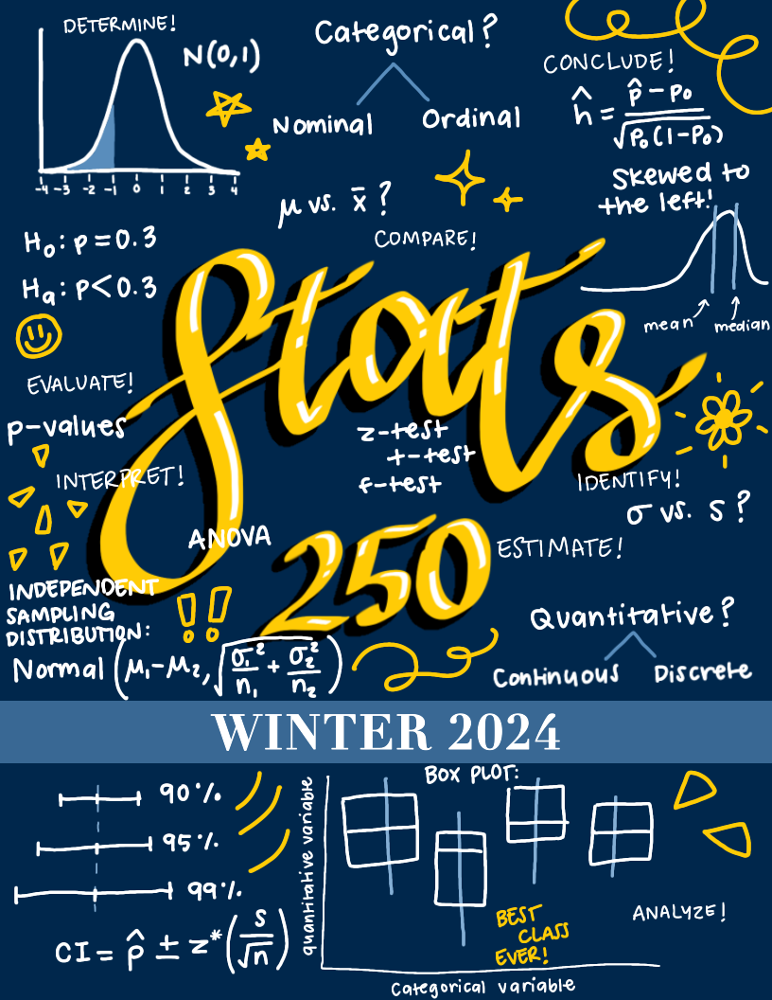
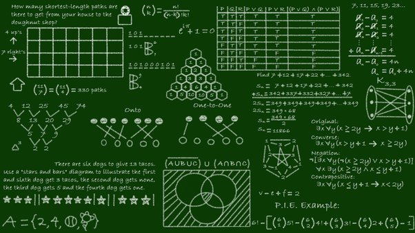
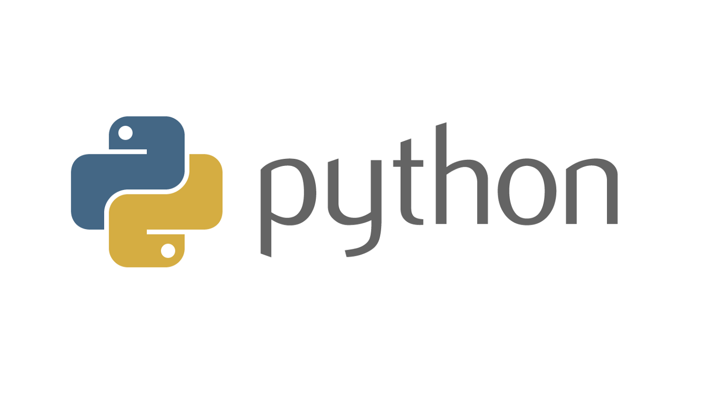

Research
I am broadly interested in Applied Probability and in particular fascinated by Markov chains, Markov processes, stochastic algorithms, and their applications in a wide range of areas such as stochastic optimizations.
|
Teaching
At UM (Graduate Student Instructor)
|

|
Introduction to Statistics and Data Analysis
STATS 250 Fall 2023, Winter 2024
An introductory course in applied statistical methodology from an analysis-of-data viewpoint. Frequency distributions; measures of location; mean, median, mode; measures of dispersion; variance; graphic presentation; elementary probability; populations and samples; sampling distributions; one sample univariate inference problems, and two sample problems; categorical data; regression and correlation; and analysis of variance. Use of computers in data analysis.
|
At UCSD (Undergraduate Teaching Assistant)
|

|
CSE 20 Spring 2021, Summer 2021, Summer 2022, Fall 2022
Introduction to the ways logic is used in computer science: for reasoning, as a language for specifications, and as operations in computation. Concepts include sets, relations, functions, equivalence relations, partial orders, number systems, and proof methods (especially induction and recursion). Propositional and predicate logic will be introduced and applied to various computer science domains such as circuit design, databases, cryptography, and program correctness.
|
|

|
CSE 8A Fall 2020 taught by Professor Adalbert Gerald Soosai Raj and Professor Sorin Lerner
Introductory course for students interested in computer science and programming. Basics of programming including variables, conditionals, loops, functions/methods. Structured data storage such as arrays/lists and dictionaries, including data mutation. Hands-on experience with designing, writing, hand-tracing, compiling or interpreting, executing, testing, and debugging programs. Students solve relevant computational problems using a high-level programming language.
|
|
Projects (In Construction)
These include courseworks, projects and other contest work not for publishing. contents to be updated (2024.01.15). To remind myself what to put: CSE 150B, CSE 250A, CSE 158, DataHacks.
|
This homepage is designed based on Jon Barron's website.
© 2024.01 Jack Yang
|
{kind=link}